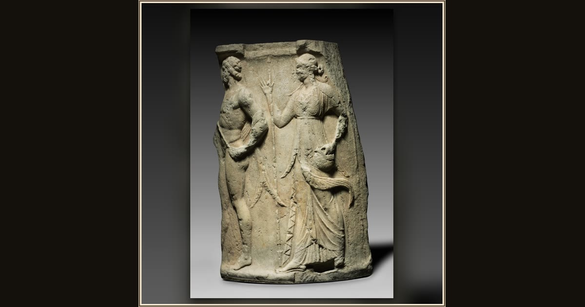

Circular Altar with Hermes and Pallas Athena
Unknown · 100 BCE–100 CE · Cleveland Museum of Art · Cleveland, USA
Hermes and Athena share this small marble altar, the two divine guides who carry messages, change appearances, and keep the homecoming moving. Explore its place in Book I of the Odyssey.